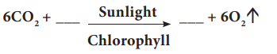
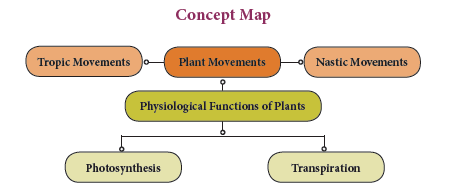

1. The tropic movement that helps the climbing vines to find a suitable support is dash
a. Phototropism b. Geotropism c. Thigmotropism d. Chemotropism
2. The chemical reaction occurs during photosynthesis is dash
a. C O2 is reduced and water is oxidized
b. water is reduced and C O2 is oxidized
c. both C O2 and water are oxidized
d. both C O2 and water are produced
3. The bending of root of a plant in response to water is called dash
a. Thigmonasty b. Phototropism c. Hydrotropism d. Photonasty
4. A growing seedling is kept in the dark room. A burning candle is placed near it for a few days. The tip part of the seedling bends towards the burning candle. This is an example of dash
A bracket closed Chemotropism b bracket closed Geotropism c bracket closed Phototropism d bracket closed Thigmotropism
5. The root of the plant is dash
1 bracket closed positively phototropic but negatively geotropic
2 bracket closed positively geotropic but negatively phototropic
3 bracket closed negatively phototropic but positively hydrotropic
4 bracket closed negatively hydrotropic but positively phototropic
A bracket closed Bracket OPEN 1 bracket closed and Bracket OPEN 2 bracket closed b bracket closed Bracket OPEN 2 bracket closed and Bracket OPEN 3bracket closed c bracket closed Bracket OPEN 3 bracket closed and Bracket OPEN 4 bracket closed d bracket closed Bracket OPEN 1 bracket closed and Bracket OPEN 4 bracket closed
6. The non-directional movement of a plant part in response to temperature is called dash
A bracket closed Thermotropism b bracket closed Thermonasty c bracket closed Chemotropism d bracket closed Thigmonasty
7. Chlorophyll in a leaf is required for dash
A bracket closed photosynthesis b bracket closed tropic movement c bracket closed transpiration d bracket closed nastic movement
8. Transpiration takes place through dash
A bracket closed fruit b bracket closed seed c bracket closed flower d bracket closed stomata
1. The shoot system grows upward in response to dash
2. dash is positively hydrotropic as well as positively geotropic.
3. The green pigment present in the plant is dash
4. The solar tracking of sunflower in accordance with the path of sun is due to dash
5. The response of a plant part towards gravity is dash
6. Plants take in carbon di oxide for photosynthesis but need dash for their living
Column A Column B
Column A Roots growing downwards into soil. Column B Positive phototropism
Column A Shoots growing towards the light. Column B Negative geotropism
Column A Shoots growing upward. Column B Negative phototropism
Column A Roots growing downwards away from light. Column B Positive geotropism
1. The response of a part of plant to the chemical stimulus is called phototropism.
2. Shoot is positively phototropic and negatively geotropic.
3. When the weather is hot, water evaporates lesser which is due to opening of stomata.
4. Photosynthesis produces glucose and carbon dioxide.
5. Photosynthesis is important in releasing oxygen to keep the atmosphere in balance.
6. Plants lose water when the stomata on leaves are closed.
1. What is nastic movement question mark
2. Name the plant part
A bracket closed Which bends in the direction of gravity but away from the light.
B bracket closed Which bends towards light but away from the force of gravity.
3. Differentiate phototropism from photonasty.
4. Photosynthesis converts energy X into energy Y.
A bracket closed What are X and Y question mark
B bracket closed Green plants are autotrophic in their mode of nutrition. Why question mark
5. Define transpiration.
6. Name the cell that surrounds the stoma.
1. Give the technical terms for the following:
A bracket closed Growth dependent movement in plants.
B bracket closed Growth independent movement in plants.
2. Explain the movement seen in Pneumatophores of Avicennia.
3. Fill in the blanks:
An equation was given below

4. What is chlorophyll question mark
5. Name the part of plant which shows positive geotropism. Why question mark
6. What is the difference between movement of flower in sunflower plant and closing of the
leaves in the Mimosa pudica question mark
7. Suppose you have a rose plant growing in a pot, how will you demonstrate transpiration in it question mark
8. Mention the differences between stomatal and lenticular transpiration
9. To which directional stimuli do Bracket OPEN a bracket closed roots respond Bracket OPEN b bracket closed shoots respond question mark
1. Differentiate between tropic and nastic movements
2. How will you differentiate the different types of transpiration question mark
1. There are 3 plants A, B and C. The flowers of A open their petals in bright light during the day but closes when it gets dark at night. On the other hand, the flowers of plant B open their petals at night but closes during the day when there is bright light. The leaves of plant C fold up and droop when touched with fingers or any other solid object.
A bracket closed Name the phenomenon shown by the flowers of plant A and B.
B bracket closed Name one plant each which behaves like the flowers of plant A and B.
C bracket closed Name the phenomenon exhibited by the leaves of plant C.
D bracket closed Name the plant which behaves like the leaves of plant 'C' question mark
2. Imagine that student A studied the importance of certain factors in photosynthesis. He took a potted plant and kept it in dark for 24 hours. In the early hours of the next morning, he covered one of the leaves with dark paper in the centre only. Then he placed the plant in sunlight for a few hours and tested the leaf which was covered with black paper for starch.
A bracket closed What aspect of photosynthesis was being investigated question mark
B bracket closed Why was the plant kept in the dark before the experiment question mark
C bracket closed How will you prove that starch is present in the leaves question mark
D bracket closed Name the raw materials needed for photosynthesis.
1. Devlin and Witham, 1986. Plant Physiology, 1st edition
2. B.P. Pandey 2003 Modern Practical Botany Vol. II.
3. V.K. Jain 2003 Plant physiology.
http://www.biology.arizona.edu/default.html
Plant Movements
